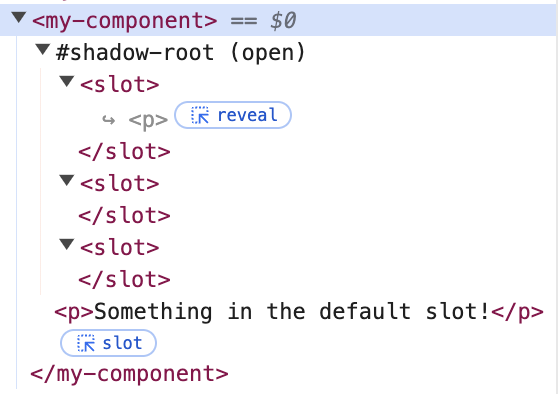

Published {% prettyDate date %}, {% readTime page %}
Web components provide a lot of solutions that frameworks provide: state solutions, reactivity, mounting on the DOM, slots... So it's no surprise that web components can also invert control to consumers. In my last post I argued that this render props pattern, because web components don't fundamentally have a template abstraction or a virtual DOM, is a bit more awkward with web components
But it's still very much possible!
Let's define inversion of control, and then look at some ways to do it with web components.
Inversion of control is the general principle that instead of offering a user more and more configuration options, sometimes you can just hand the elements and control to the consumer to do exactly what they want with them. Render props is a strategy to do just that, and I'll use "render props" as a catch-all for this sort of pattern in components.
To be clear here, using "render props" originates from passing rendering instructions through a property on a component. I first encountered the pattern in React, but it's defnitely present in all the other frameworks under various names.
Vue has a nice construct called scoped slots which allows you to create slots very much like web components, but also to provide live values up to the consumer to use in those slots.
Ember allows yield with
block content
which is effectively the same thing as scoped slots or render props, just in
Ember.
So how do we do this sort of thing with web components? (Note in the following examples I'm trying to stay in the vanilla JS world mostly. But that means it's easily done in any framework or abstraction like Lit.)
We have to quickly say that the slot element is a very powerful
way to invert control already. I've gone into detail on slots
in another post, so I won't
talk slot specifics here. There are some drawbacks in the current slot
implementation that make it not work well for render props.
First, you can't render multiple instances of the same slot.
{% include "./example1.html" %}You can see that although we'd like to place the slot contents in the shadow DOM three times, the browser only populates the first default slot:

Why would you want to do this? Well, there's actually some use cases, for
example, in the <selectedoption> element in custom selects.
Being able to render one option (the selected one) in multiple places would be
nice. (If you're interested in diving into the problem, check out this recent
post by Jake Archibald:
How should selectedoption work?)
It would be nice if you could make a component like my-list which
takes a slot with name "option" that allows you to determine the template for
the list items.
As you'll see, even if we could define a template for list items, we'd need to somehow populate that template with interpolated values. In other words, the template needs to be able to show values for each separate list item.
All right, all right. Let's get down to brass tacks.
The simplest and most straighforward way is to have a component expect a property to be filled with a function. That function should expect certain data from the component and return a rendered element.
In our case, let's make my-list and have it expect a
renderItem() function. As the component renders out each item in
the list, it passes the item data to renderItem() to have the
consumer define how the items should be rendered.
Maybe this is an option:
{% include "./example2.html" %}
It works, but something feels off to me. Maybe it's that there's so much that
needs to be imperatively done. Maybe it's that a consumer needs to be aware of
so much to use this strategy (like that the
renderItem() method expects (string, number) as arguments and
should return an HTML string.)
It's a little easier ergonomically if you're consuming it from a Lit component:
{% include "./example3.html" %}But really, this is just because Lit has niceties like html templating, and being able to bind properties in the template using the period prefix.
If you're totally in Lit and your consumer and provider are both Lit
components, it's a little nicer because at the very least the components have
a common expectation of an
html`` template object. The consumer has a more expected
convention of using a
Template result, so the consumer doesn't have to think about whether it should return actual
elements or an html string. But that's starting to head into framework land.
Let's stick to more vanilla JS for now...
template tag?The template tag is meant to hold sections of HTML that could be later used by javascript. Perhaps we could use this to make render props more declarative with vanilla js?
{% include "./example4.html" %}This is arguably the most vanilla way to declaratively pass rendering instructions to a list component. All the other proposals on this page really are imperative. But man, is it verbose.
We use <span data-___></span> as kind of placeholder.
We pick up a template in the light DOM that has a specific ID (in this case
"item"). We fill those placeholder spans with values from the items.
There is one serious issue with this approach: the issue of ownership and control. Once the consumer has returned that function, the list owns any elements it creates with that callback. That means styles can't be applied from outside of the component, and the consumer can't (or maybe more accurate, shouldn't) later reference these elements because they're covered over by the shadow DOM.
Maybe that's okay?
But there is one way to allow continued access to the items' styles. As a part
of making the item in the callback, you can actually attach a
part attribute to the element, which exposes the elements to the
::part() selector from outside of the shadow DOM.
This feels way better, at least for styling by the consumer.
In the end, it's just a lot of coordinating and manual effort by the list component. But it works! There might be a way to abstract a lot of this work away. But let's move on.
So far, in both patterns we've used some handshake where the providing component is told how to render items: one way was through receiving a function, the other is through receiving a declarative template. But how about we try it with an event?
Here's the strategy. It's a little crazy, but we're going somewhere with this:
list-render-item that
provides data and index for a particular item
Okay, let's see this is in action:
{% include "./example5.html" %}It may seem crazy that we store item renderings on the element itself, but how else are we going to provide live values back to the list? You can't use attributes unless you want to serialize the renderings in to strings and parse the html again for each item. So this might be the sanest way to do it? Or is it...?
There is a proposal in the web components community group protocols repo: slottable requests.
The idea is the same as with the context protocol proposal that lives in the same repo. These protocals are proposed ways for web components to interact- sort of a common language to achieve certain things.
This "slottable request" is the logical conclusion of the "event" based render prop we just looked at. The concept: when a component encounters something that needs to be rendered, and wants to invert control, the component can emit an event with name "slottable-request". The consumer listens for this event, and provides a rendered something through the callback from the "slottable-request" event. The difference is that this rendering is is provided through a slot!
Check out this example:
{% include "./example6.html" %}That's right, the list makes a slot for each item, the consumer is making a slot item, and they are coordinating with each other to pass the item in through that slot! It's pretty crazy. But it's probably better than the previous event-based proposal.
This allows the consumer to retain control of the element and styles through the light DOM. The consumer can style those items just by adding styles that target those items in the light DOM, and those styles will show as the item is displayed in their slot
This avoids an awkward storing of rendering elements on the class list instance. We leverage slots for what they're meant to do- allow consumers to place elements that are reflected into the DOM.
This protocol is pure vanilla JS goodness. There are no framework constructs in the example above. This doesn't mean there shouldn't be abstractions to make this super easy, of course. But it is 100% supported by just the platform.
Lit actually is toying with implementing the slottable request protocol, which would be fantastic because, like in the case of context, this would be an easy way to use this strategy in lit which also maintains interoperability with vanilla web components and other frameworks. The protocol is, after all, just the platform.
Well, hopefully listing out some strategies inverting control with rendering templates was helpful and maybe inspires some solutions in your work with web components!
Let me know what you think. {% socials %}